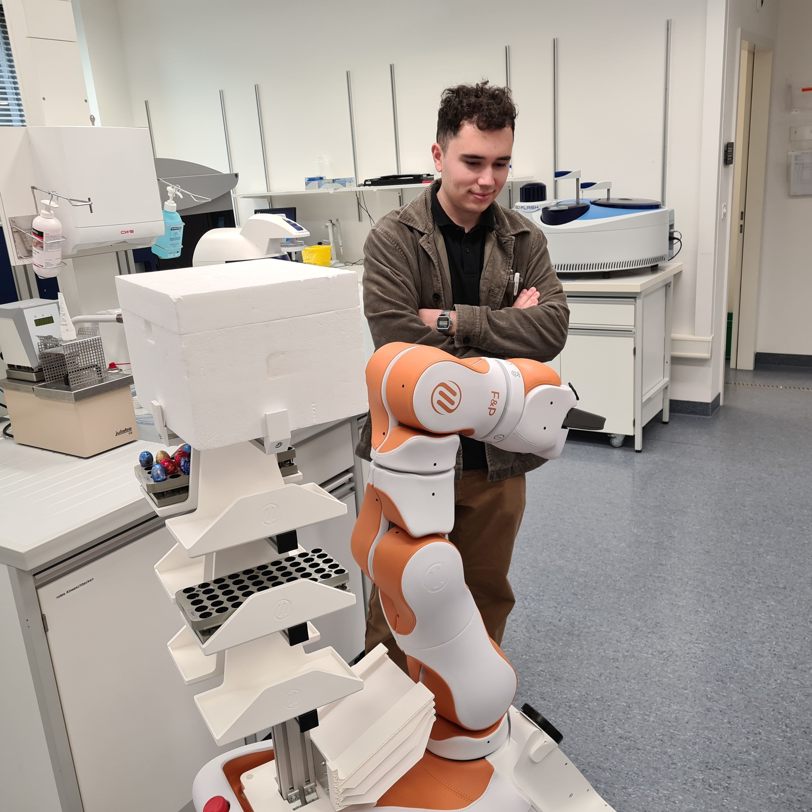

AMR Sample-Vial Handling System
2025
One of several projects I worked on during my internship at F&P Robotics, this one I owned end to end, from concept through to delivery at the customer site. I designed a modular sample-vial carrying system for an autonomous mobile robot (AMR), enabling automated loading and unloading of up to 300 vials per trip. It's now running at University Hospital Basel, saving CHF 495 per week and 11.5 staff hours, and helping patients get their results faster.


Project and IP owned by F&P Robotics AG.